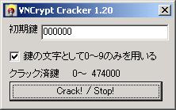

VNCCrack （VNCrypt暗号ファイルのクラッキングツール）v1.20 とつげき東北 ホーム
★★★解読コンテストのお知らせ★★★
・目的
VNCryptの暗号法に、何か理論上の穴がないかを確かめるために、解読コンテストを行います。
「短いビット数の鍵でも強いこと」を示すのが目的ではなく、あくまでも理論上の問題がないかを確かめるためです。
・趣旨
VNCryptの長い鍵長によって暗号化された暗号文を解読して、原文を特定してください。
VNCrypt.exeを用いて、鍵長や重合係数、パディング数の制限を外して暗号化しただけの暗号文で、特別に設定（フォーマット）を変えたりしてはいません。
最も強力なモードで暗号化した「強い暗号化版」と、運用高速モードで暗号化した「弱い暗号化版」があります。
・強い暗号化版
鍵長は約2048文字、XORモード6、重合係数512、パディング数は1024です。
元ファイル名は「cracktest.txt」で、このファイル名の情報は暗号文にも付加されています。
・弱い暗号化版
鍵長は約1024文字、XORモード0、重合係数2、パディング数4になっています。
元ファイル名は「cracktest2.txt」で、このファイル名の情報は暗号文にも付加されています。
・賞金
「原文と完全に一致する復号文」「鍵の文字列」「解読の方法と理論の簡潔な説明」の3つをメールしてくれた方に、賞金を差し上げます。
郵便書留で送ることが可能な地域以外の方は、あらかじめご連絡ください。
仮に原文と一致しても、解読の方法論の説明ができない場合は賞金を差し上げられませんのでご注意ください（その場合、コンテストは継続します）。
なお、ブルートフォース攻撃などでも（つまり、カンなどではなく、方法論自体が合理的なものであれば）合格です。
ブルートフォース攻撃の場合は、合理的に場合の数を減らす方法を解説してください（全部試した、というのはだめです）。
賞金の金額は次のようになっています。
（強い暗号化版の場合。弱い暗号化版では、この1/6程度が賞金金額となります。弱い鍵暗号に正解者が現れた場合、その賞金金額を強い鍵暗号の賞金から差し引いて、コンテストは続行します）。
2002/12/31までの解読 5000円
〜2003/01/31までの解読 10000円
〜2003/02/28までの解読 15000円
〜2003/03/31までの解読 20000円
〜2003/04/30までの解読 25000円
〜2003/05/31までの解読 30000円
〜2003/06/30までの解読 40000円
〜2003/07/31までの解読 50000円
〜2003/08/31までの解読 60000円
〜2003/09/30までの解読 70000円
〜2003/10/31までの解読 80000円
〜2003/11/30までの解読 100000円
〜2003/12/31までの解読 120000円
※賞金と期間の関係が逆ではないかと思われるかもしれませんが、上記の通りです。弱いモードでの暗号の解読の場合、賞金は1/6です。
・期限
2003/12/31まで（解読者が現れた場合、このページのここでお知らせし、即座にコンテストを終了します）。
弱い鍵の暗号が解読された場合は、強い鍵の暗号の賞金から、弱い鍵暗号解読の賞金分差し引いて、コンテストを続行します。
強い鍵の暗号の解読に成功すると、弱い鍵の暗号の解読は難しくない（同じ方法で出来る）と考えられるため、強い鍵の暗号が解読された場合、コンテストは全て終了します。
・暗号文
vncフォーマット（2.90）ファイル（強い暗号化版）
vncフォーマット（2.90）ファイル（弱い暗号化版）
注意：これ以前のバージョンのファイルは、そのファイルが作成された1ヵ月後に効力を失います。
なお、VNCの暗号化ルーチンはこの後SHRANDを用いるなどより強力になっていますが、このバージョンのものをコンテストにすることにします。
このバージョンの暗号化では、SHRANDを用いていません。
弱い暗号化の方なら、気合と技術があれば解けるのではないかと思います(^^;
・提出先
totutohoku@hotmail.com
なお、投稿は1人につき1暗号あたり1メールまでで、それ以降は無効とします（修正や改良程度ならかまいませんが、総当り的な投稿は禁止ということです 笑）。
説明不足などの場合は「書き直し」「修正」を要求する場合があります。
正解者の名前（本名の苗字のみ）と住所（都道府県のみ）と、解読の理論、解読日は公開いたします。
本人の許可があれば、より詳細な情報を公開します。
・注意点
このコンテストにおいて正解者が現れる直前までの間に限り、とつげき東北は、断りなくコンテストの内容を修正・変更・削除することができるものとします。
とつげき東北は、それによって生じたいかなる損害にも責任を負わないものとします（例えばとつげき東北自身がこの暗号システムの理論的な解読法を見つけた場合などです）。
とつげき東北自身が暗号法の穴を見つけた場合を除いて、とつげき東北の都合でコンテストを中止する場合は、遅くとも1週間以上前からこのページで予告することとします。
なお、とつげき東北が死亡したり、事故等のやむを得ない理由でこのページにアクセスできなくなった場合は、コンテストは予告なく突然無効になる可能性があります。その場合も、とつげき東北および関係者は、一切の法的責任を負わないこととしますので、予めご了承ください。
★★★解読コンテストの情報は以上★★★
VNCCrack説明
VNCryptで暗号化された暗号文を、ブルートフォースアタックでクラッキングするためのプログラムです。
つまり、様々な鍵で解読を試みてみて、解読できる場合に解読するプログラムです。
VNCryptなどの暗号は、長い鍵長で使用する場合には非常に強力ですが、5〜7桁程度の数字の鍵では「安全でない」ことが身にしみてわかるでしょう。

性能
CPU Athron1.3ギガで、単一CPUのとつげき東北の環境で、1秒あたり約12000個の鍵でクラックを試みます。2^13〜2^14程度です。
1分でおよそ2^19個の鍵を、1時間でおよそ2^25個の鍵を、1日でおよそ2^30個の鍵をクラックします。
このように、鍵長32ビット程度の暗号は現代の暗号理論・計算機性能では「弱い暗号」だと言えます。
たった4ケタの数字ですと、文字通り「1秒で」クラックされてしまいます。
VNCCrackダウンロード（現在公開停止中）
VNCryptに対するブルートフォースアタックについて
VNCryptのデコードルーチンは、鍵が間違っているとき、多くの場合「間違った鍵である」という返り値を返します。
それは、元ファイル名の指示や暗号文本体の位置の指定データが暗号化されて保存されており、間違った鍵でそれらを複号化するとたいていの場合「不正な値」になるからです。
「不正な値」であるかどうかだけをチェックすれば良いので、クラッカーに優しい構造のように思えるかもしれませんが、そうではありません。
元ファイル名がn文字とみなされ、かつ、そのn文字が正しいファイル名として認識される確率は、任意の1バイトコードがファイル名に使える文字である確率をPとして、P^n／2^32と表されます。
また、暗号文本体位置指定のint情報が、ファイル内のどこかを指す確率は、ファイルサイズをV（<=2^32）として、V／2^32です。
デコードが成功する確率は、i=1〜MAX_PATHに渡る、V／2^32 * P^i／2^32の和です。
MAX_PATH=512、P=1/2などとして適当に概算すると、1つの鍵に対するデコード成功率はV／2^56〜V／2^64程度になります。
もちろんデコード成功率は、解読の成功率とは異なります。
鍵長kビットである場合、一度全ての鍵に対するブルートフォースアタックを試みるごとに、平均V・2^（k-56）〜V・2^（k-64）個の可能なデコードが得られます。
kが充分大きい限り、これは絶望的な数になる上、そのうちで「正しい復号」はたった1通りです。
そもそも危険な鍵長（56ビット以下など）で暗号化すること自体避けるべきことであり、「避けるべき鍵長での暗号文に対して、クラッキングが好都合なこと」は、むしろ全体としてのユーザの危険認識を高める教育効果を持つと信じます（当然、「不正です」との返り値を返さないようにすることは簡単ですが、敢えてこのような仕様にしているのです）。
バージョン情報
v1.00 とりあえず作った版。650鍵/秒。
v1.10 UIの改良・アイコンの作成。
v1.20 12000鍵/秒に性能向上。